Радиолампы
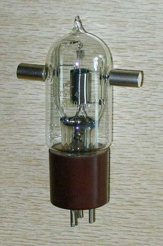 |
ГУ-4. Одна из первых отечественных генераторных радиоламп. 1950 г. |
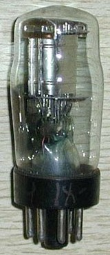 |
СО-244. Оконечный пентод из серии "малгабов". 1938 год. |
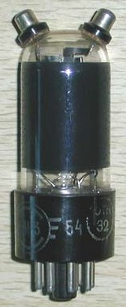 |
ГИ-3. Это не 6П6С с двумя "рогами", а модуляторный монотриод. 1954 год. |
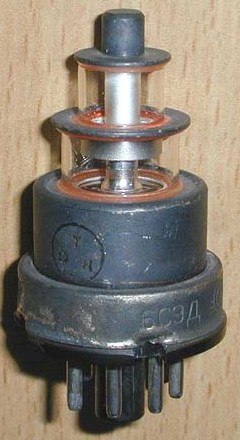 |
6С9Д. Лампа в исполнении "маячок". 1965 г. |
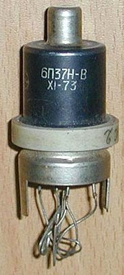 |
6П37Н. Что это - металлическая лампа или нувистор? 1973 г. |
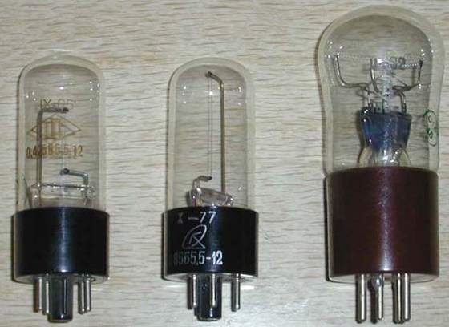 |
Бареттеры. Предназначены для стабилизации тока накала (например, в схемах с последовательным соединением нитей накала). На фото: 0,45Б5,5-12, 0,85Б5,5-12, 1Б-9. |
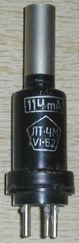 |
Термопарная вакууметрическая лампа. Через верхнюю трубку присоединяется к откачиваемому объему для контроля уровня вакуума по теплопроводности. На фото - ЛТ-4М, указан рабочий ток нагревателя. |
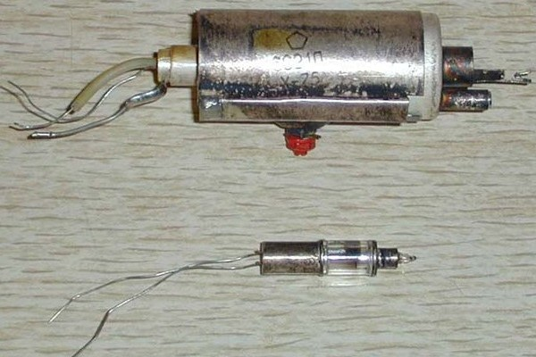 |
Миниатюрные СВЧ-лампы. На фото - триод 6С21Д в резонаторе (частота резонатора настраивается красным винтом) и диод 6Д16Д. |
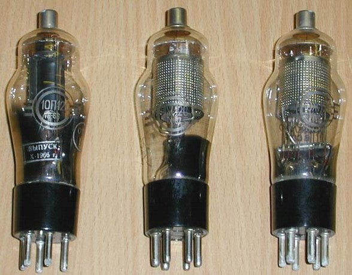 |
Отечественные радиолампы с цоколем RCA. На фото - 10П12С, 7Ж12С, 10Ж12С. Где применялись лампы со столь нестандартным цоколем и накалом? |
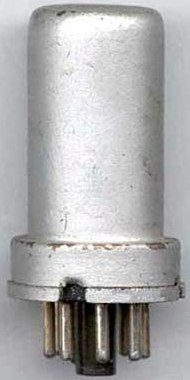 |
1. Что внутри? Октальная металлическая лампа отечественного производства покрыта алюминиевой краской и не имеет никакой маркировки. |
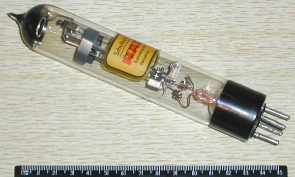 |
Мощное вакуумное реле. NARVA 220 V 10 A. Ток управления 12 мА. Одно из "чудес" электровакуумной техники. Сделано в ГДР |
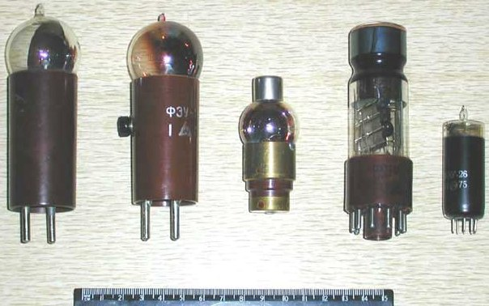 |
Отечественные фотоэлектронные приборы. На фото - ЦГ-4 (один из первых серийных цезиевых фотоэлементов), ФЭУ-1 (первый фотоэлектронный умножитель с тремя электродами), ФЭУ-3, более современные многоэлектродные фотоумножители ФЭУ-35 и ФЭУ-26. Первые три применялись в кинопроекционной аппаратуре 1930-1970 годов для воспроизведения звуковой дорожки фильмов. Последние - были незаменимы в физических экспериментах для регистрации одиночных фотонов. |
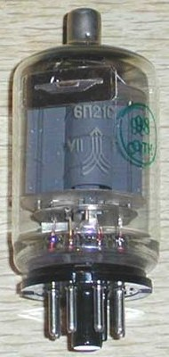 |
6П21С. Наряду с лампой 4П1Л, является наиболее поздней разработкой достаточно мощной прямонакальной лампы, пригодной для аудио. |
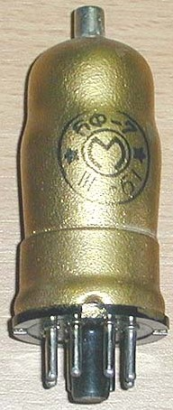 |
6Ф-7. Эта частотнопреобразовательная лампа своей маркировкой напоминает о периоде (конец 1940-х), когда в написании типов использовался дефис. Уникальное сочетание: баллон ламп серии малгабов смонтирован на цоколе октальной металлической радиолампы. Московский электроламповый завод, 1961. |
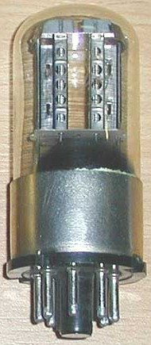 |
6Н8С. Помимо использования цоколя с
металлическим обрамлением для лучшего теплоотведения, эта версия широко
распространенной лампы характерна наличием отверстий в анодах. Данная
разновидность оптимизирована для импульсно-переключающего режима работы и использовалась в первых отечественных ЭВМ. Московский электроламповый завод, 1962. |
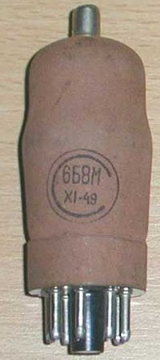 |
6Б8М. Кто теперь помнит, что маркировка первых версий этой лампы имела на конце букву "М", аналогично лампам малогабаритной серии (2К2М, 2Ж2М)... Тем более, что ее внешняя и внутренняя арматура почти полностью совпадает с батарейными "предками". Завод "Светлана", 1949. |
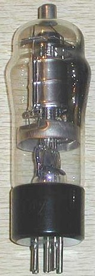 |
СО-182. Один из первых отечественных
пентодов, разработанный на Ленинградском заводе "Светлана". Цоколь
стандартизован с немецкими лампами тех времен, напряжение косвенного накала - 4 Вольта. 1938 год. |
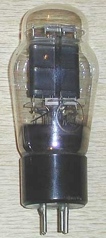 |
УО-186. "Знаменитый" прямонакальный триод, высочайшая линейность которого до сих пор приводит в трепет аудиофилов. Завод "Светлана", 1940. |
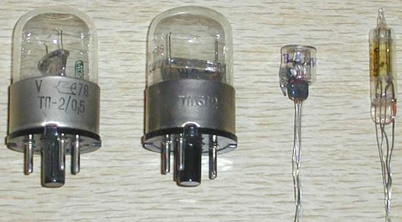 |
Вакуумные
термисторы. ТП-2/0,5, ТП6-2, ТВ-5 (прямого подогрева), СТ3-21 (косвенного подогрева). Термисторы прямого подогрева служили для стабилизации тока. В отличии от бареттеров, применялись в слаботочных, сигнальных цепях. Термисторы косвенного подогрева имеют две нити накала в тепловом контакте - ток в первой нити управляет сопротивлением второй. |
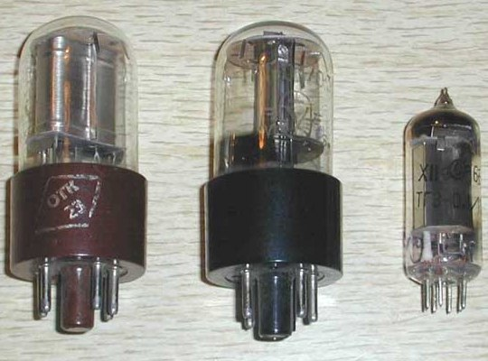 |
Тиратроны с горячим
катодом. Газонаполненные переключающие приборы с триггерным эффектом. Предназначались для построения, импульсных и пересчетных схем. Принцип работы основан на скачкообразном управлении газовым разрядом между анодом и катодом с помощью управляющих электродов. ТГ1-0,1/1,3, ТГ1-0,1/0,3, ТГ3-0,1/1,3. |
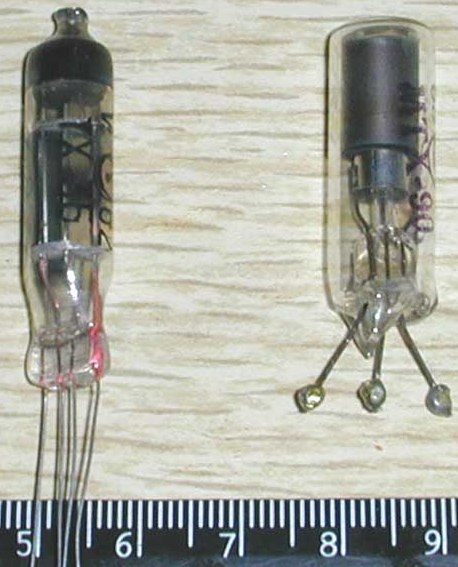 |
Тиратроны с холодным катодом. В отличие от тиратронов с горячим катодом, не требуют энергии на подогрев. ТХ-3Б, МТХ-90. |
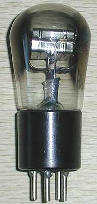 |
УБ-110. Прямонакальный триод, широко
применявшийся в приемной аппаратуре конца 1920-х - начала 1930-х годов.
Интересен поперечным расположением прямоугольного анода. Напряжение накала
- 2 Вольта. Ленинградский завод "Светлана" |
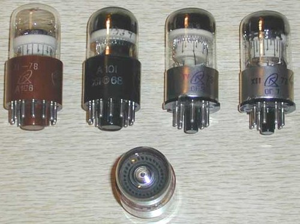 |
Декатроны. Газонаполненные пересчетно-индикаторные приборы. Электродами служат анод и три изолированных друг от друга групповых катода (основной и два переносящих подкатода), расположенных по окружности. Штырьки подкатодов перемежаются, их торцы образуют своеобразный экран. Индикация состояния меняется при перескакивании по ним свечения разряда. Широко использовались в 1940-1950-х годах в устройствах пересчета и индикации (контроль количества изделий в промышленности, счетчики ионизирующих излучений и пр.) В отличие от тиратронов, осуществляют десятичный пересчет. На фото: А106, А101, ОГ3, ОГ7. |
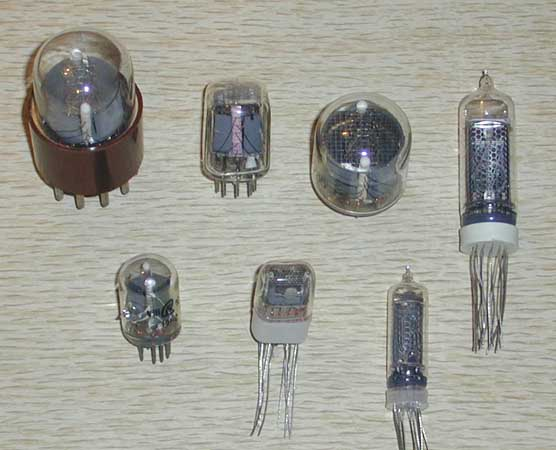 |
Цифровые газоразрядные индикаторы тлеющего
разряда. Светящийся катод этих приборов имеет форму индицируемых знаков - цифр, букв и др. символов. Широко применялись в блоках индикации первых вычислительных машин и устройств контроля. На фото: ИН-1, ИН-12А, ИН-4, ИН-14, ИН-2, ИН-17, ИН-16. 1940-1950-е годы. |
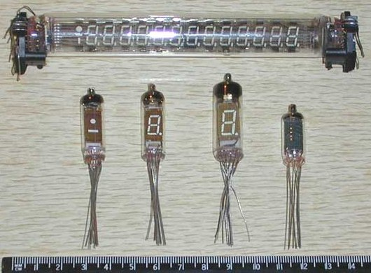 |
Цифровые газоразрядные индикаторы тлеющего
разряда. Светящийся катод имеет форму сегментов отображаемых символов. Имеются и многоразрядные типы. Более экономичны, но требуют специальной дешифрации кода. Применялись в большинстве устройств индикации (ЭВМ, калькуляторы, бытовая техника и многое другое). Но фото: ИВ-27М, ИВ-1, ИВ-3А, ИВ-6, ИВ-16. 1950-1960-е годы. |
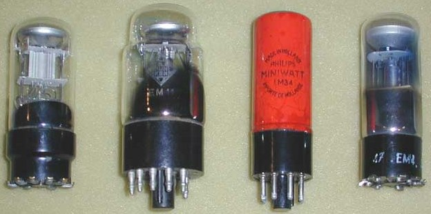 |
Электроннолучевые индикаторы настройки зарубежных
производителей. Некоторые из них имеют 2 или даже 4 ("мальтийский крест") противолежащих индикаторных сектора. На фото: EM5 (Tungsram), EM14 (Telefunken), EM34 (Philips Miniwatt), EM4 (RWN). |
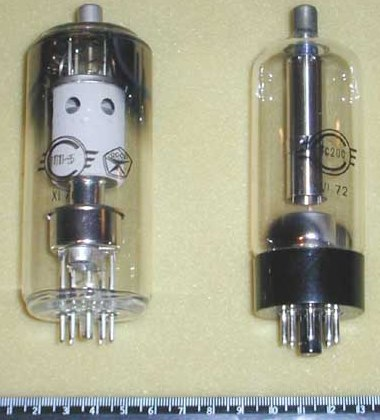 |
Лампы прямого электронного потока ГП-5,
6С20С. Конфигурация электродов этих ламп служит для создания потока электронов в одном направлении (плоский катод, плоская сетка и торцевой анод). Этим они отличаются от обычных ламп коаксиальной конструкции и имеют перед ними некоторые преимущества (например, высоковольтность). Тетрод ГП-5 (с цоколем "магноваль") разработан для выходного каскада строчной развертки первых отечественных цветных телевизоров 1970-х годов. Между прочим, при работе такие лампы испускали опасное рентгеновское излучение, и ГП-5 в телевизоре была закрыта специальным защитным колпаком. |
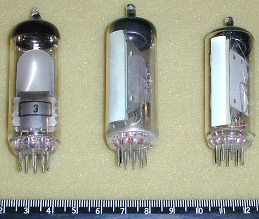 |
Пальчиковые электронно-лучевые
индикаторы. Первая из показанных имеет металлический экран внутри баллона, у двух остальных светящийся состав нанесен на стенку баллона изнутри. Первая имеет светящийся индикаторный сектор переменного раскрытия, остальные - индикаторные полосы переменной длины На фото: 6Е1П, 6Е3П и ее прототип EM84 фирмы "Tesla". |
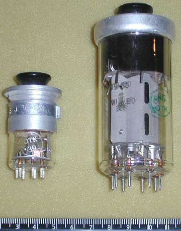 |
"Алюминиевые шляпы" Эти две лампы родственны по конструкции, но совершенно различны по назначению. ГУ-50 - широко известный лучевой тетрод для выходных каскадов радиопередатчиков, который "умельцы" издавна используют и для аудио. 12С3С - маломощный триод СВЧ диапазона. Их роднит наружная алюминиевая арматура и ввинчивающаяся в нее пластмассовая рукоятка, служащая для извлечения лампы из панели-гнезда. На фото: 12C3C, ГУ-50. |
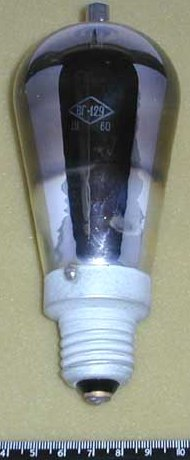 |
Газотрон ВГ-129. Выпрямительная лампа, работающая на парах ртути. Разработанные в начале 30-х годов, газотроны широко применялись в мощных выпрямительных установках (передатчиках, радиоузлах, включая школьные, и даже небольших сварочных аппаратах). Газотроны работали с токами до десяти ампер, но требовали предварительного пятиминутного разогрева нити накала (если так можно назвать солидную спираль из вольфрамовой проволоки или ленты) для испарения ртути в баллоне. Этот газотрон имеет столь знакомый нам по осветительным лампам резьбовой цоколь. Мало кто знает, что такой цоколь впервые был предложен изобретателем лампы накаливания Томасом Эдисоном. С тех пор он носит название "Эдисон" и сохраняет первоначальные размеры. |
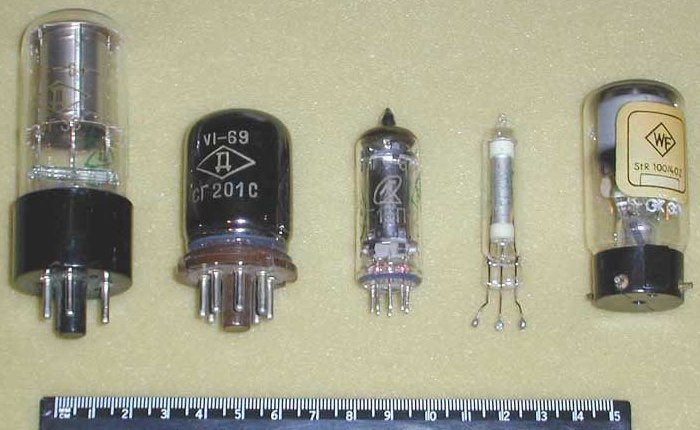 |
Газонаполненные стабилитроны
(стабиловольты). Предназначены для стабилизации постоянного напряжения в пределах, задаваемых типом стабилитрона - от десятков до многих сотен Вольт. Стабилизация осуществляется за счет изменения площади разряда у катода. Интересен последний в ряду прибор - кроме редкого цоколя, он имеет третий, поджигающий электрод. На фото: СГ3С, СГ201С, СГ15П-2, СГ302С StR 100/40Z фирмы WF (Восточная Германия). |
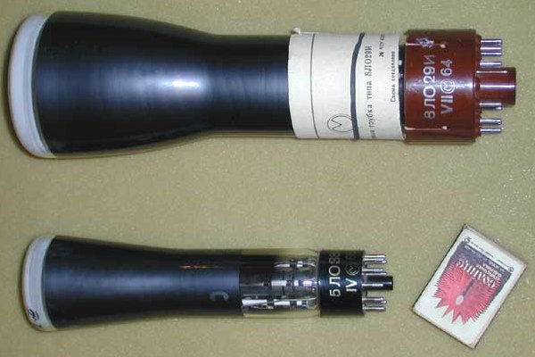 |
Электронно-лучевые трубки статического
отклонения. Основное их применение - лабораторные приборы, такие как осциллографы и осциллоскопы, предназначенные для наблюдения формы электрических импульсов. В районе цоколя трубки расположена "электронная пушка", создающая электронный луч. После модуляции по интенсивности и отклонения с помощью соответствующих электродов он попадает на круглый флуоресцентный экран, на котором и наблюдается его перемещение. Трубки с большим временем послесвечения (до десяти секунд) в 1930-1960 годах служили для визуальной и фотографической регистрации быстропротекающих процессов ("лупа времени"). На фото: 8ЛО28И, 5ЛО38И. |
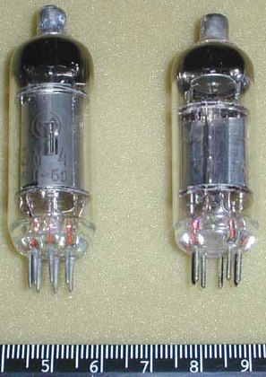 |
Электрометрические
лампы. Спроектированные на максимальное входное сопротивление по управляющей сетке, эти лампы применялись в приборах для регистрации и измерения сверхмалых электрических потенциалов в физических экспериментах, биологии (при измерении биопотенциалов) и медицине (в электрокардиографах и энцефалографах ). Накал и анод питались обычно от батарей для обеспечения стабильности и помехозащищенности. Но фото: ЭМ-4, 1Э1П. |
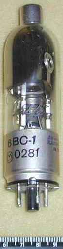 |
6ВС-1. Экзотический прибор. Этикетка гласит: "электронно-лучевой стабилизатор высокого напряжения (до 40 кВ)". Выпущен в 1981 году. Эти небольшого габарита лампы выполняли свою скромную детектирующую роль в приемной аппаратуре. Они применялись до 1970-х годов, несмотря на появление уже в 1930-х комбинированных радиоламп, содержащих, помимо усилительной части, по одному-двум, а иногда и трем диодам. Создается впечатление, что ресурс этих ламп бесконечен – автору никогда не попадались неисправные. Порой лампа с многократно ослабленной эмиссией вполне удовлетворительно работает в приемнике. |
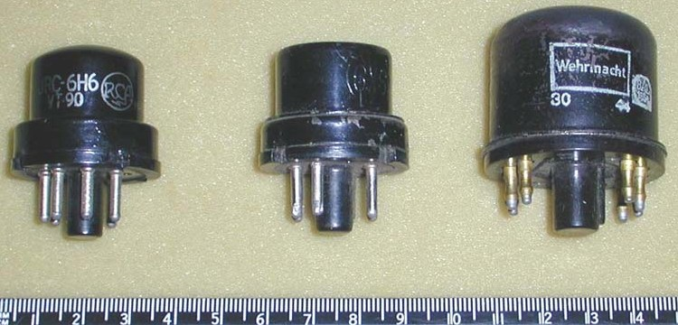 |
6H6 (RCA), 6Х6, EZ11
(Telefunken) Еще немного "моложе" – EZ11 фирмы “Telefunken”, Германия. Разнообразные лампы такой конструкции (“черепашки”, как их называют у нас) были основой немецкой радиотехники времен второй мировой войны. Именно об этом напоминает нанесенная на них надпись "Wehrmacht". |
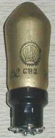 |
Примерно к этому же времени относится и следующая стройная лампа – СВ2 фирмы “Valvo” c уменьшенным цоколем “паук”. Многочисленная группа ламп с подобным цоколем включала диоды с различным напряжением накала. |
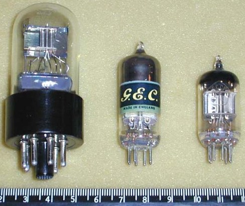 |
6Х6С, D77 (General Electric),
6Х2П. Ш широко распространенная у нас в 1950-х годах стеклянная версия - 6Х6С (использовалась в приемниках "Балтика", "Мир" и многих других) и ее пальчиковый аналог 6Х2П (крайний справа), который благополучно “дожил” до заката ламповой вещательной техники в середине 1970-х. Показанная на фото лампа (кстати, вполне заслуженно) несет "Знак качества СССР". В центре - ee прототип, лампа D77 английской фирмы "General Electric". |
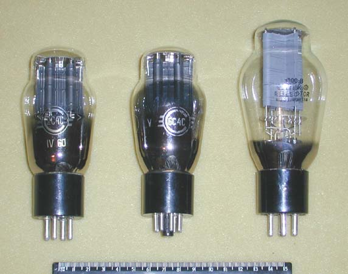 |
2C4C, 6C4C 300B Прямонакальные триоды. Слева – 2С4С (ее выдает старинный цоколь) и 6С4С - похожи на кенотрон 5Ц3С? На Ленинградском заводе “Светлана” для их производства использовалась одинаковая арматура. Если где-то есть большие запасы 5Ц3С, там, бывает, “прячется” и случайно попавшая туда 6С4С. Разработанные для целей радиосвязи, 2С4С и 6С4С были и остаются привлекательными для аудио в силу их отменного качества звучания. Венчает триаду несравненная 300В. Ее конструкция разработана в 1930-х годах специалистами американской фирмы Western Electric непосредственно для звукового применения. Лампа выпускается до сих пор в нескольких странах без изменения конструкции. На снимке – отечественная, Саратовского завода “Рефлектор” (экспортная марка “Sovtek”). Как утверждают адепты 300В, ничего лучшего для звука с тех пор так и не придумано. А качество оригинальных ламп фирмы WE остается и поныне недостижимым. |
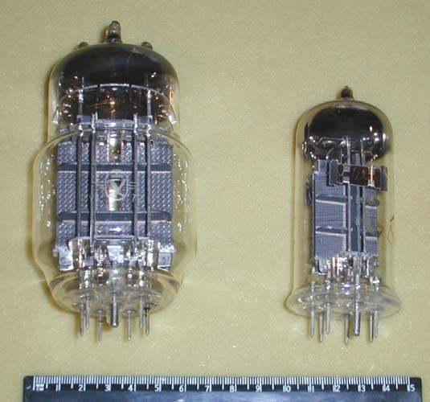 |
6С33С-В, 6С41С "Игрушки аудиофилов" более поздней разработки. Предназначенные изначально для мощных стабилизаторов напряжения, эти триоды с малым внутренним сопротивлением оказались достаточно линейными для применения в аудиотехнике. Особенное пристрастие к ним имеют почему-то японские конструкторы. Следует отметить, что 6С41С, будучи по внутренней конструкции половинкой 6С33С, не только в два раза слабее по мощности, но и звучит заметно хуже. |
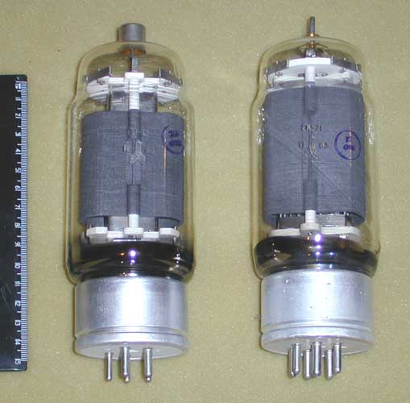 |
ГУ-13,
ГК-71 Аудиофильская мысль дошла и до использования в усилителях мощности подобных "монстров" (наряду с ГМ-70) из выходных каскадов радиопередатчиков. Не пугают ни габариты, ни анодные напряжения в 1,5 Киловольта... Зато такие лампы могут отдать в однотакном режиме мощность до 20 Ватт при отличном качестве звука. |
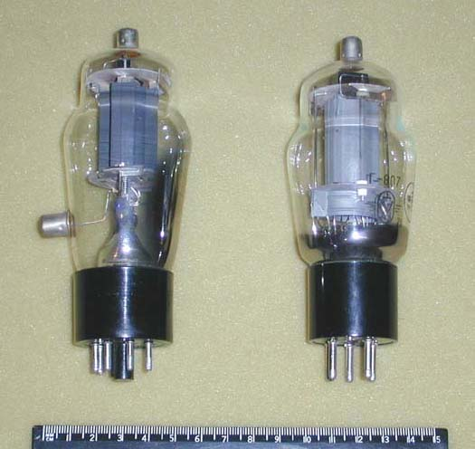 |
Г-411, Г-807 Подобных "старичков", по мнению аудиофилов, также рано списывать в архив. На них успешно строятся однотактные и двухтактные каскады аудиоусилителей, несмотря на их генераторно-модуляторное предназначение. |
Источники
oldradio.onego.ru - Интересные радиолампы, Часть 1